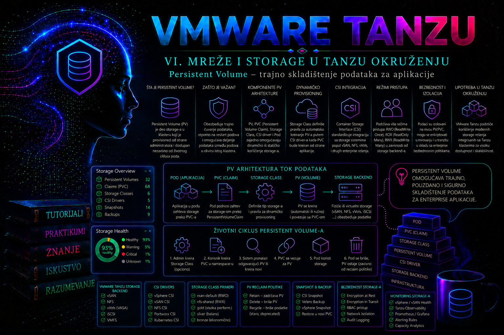

VMware & Tanzu

Kontejner je potrošna izvršna jedinica: može biti zamenjen novim kontejnerom, Pod može biti ponovo kreiran na drugom node-u, a Deployment može promeniti sve svoje replike tokom ažuriranja. Podaci zapisani samo u sloj kontejnera zbog toga nisu pouzdano mesto za baze podataka, dokumente, redove poruka, indekse, korisničke datoteke i druga stanja koja moraju preživeti životni ciklus Pod-a. Kubernetes rešava ovaj problem odvajanjem životnog ciklusa aplikacije od životnog ciklusa skladišta pomoću objekata PersistentVolume i PersistentVolumeClaim.
U Tanzu okruženju trajno skladište nije samo direktorijum pridružen kontejneru. Iza jednog zahteva aplikacije učestvuju Kubernetes API, scheduler, CSI kontroleri, kubelet, vSphere Container Storage Plug-in, vCenter CNS sloj, datastore ili vSAN i odgovarajuća vSphere Storage Policy. Zbog toga administrator ne proverava samo da li PVC ima status Bound, već prati ceo put od zahteva aplikacije do stvarnog storage objekta i njegovog priključivanja radnom node-u.
Zašto aplikaciji nije dovoljan lokalni prostor kontejnera
Svaki kontejner ima zapisivi sloj datotečnog sistema, ali je taj sloj vezan za konkretnu instancu kontejnera. Kada kubelet ponovo kreira kontejner, kada Deployment zameni Pod ili kada administrator ukloni neispravnu repliku, novi kontejner ne dobija automatski podatke zapisane u prethodnom zapisivom sloju. Čak ni direktorijum tipa emptyDir nije trajno skladište: može preživeti restart pojedinačnog kontejnera unutar istog Pod-a, ali se briše kada Pod prestane da postoji.
Persistent Volume omogućava da podaci imaju životni ciklus nezavisan od Pod-a. Novi Pod može ponovo montirati isti storage i nastaviti rad sa postojećim sadržajem. To, međutim, ne znači da Persistent Volume automatski obezbeđuje backup, replikaciju aplikacionih transakcija, zaštitu od logičkog brisanja ili konzistentan oporavak baze podataka. Trajnost skladišta i oporavljivost aplikacije jesu povezani, ali nisu ista funkcija.
Persistent storage je odgovarajuće rešenje kada aplikacija mora da sačuva stanje između zamene Pod-ova, kada se podatak ne može jednostavno ponovo izgraditi ili kada aplikacija zahteva stabilan datotečni sistem. Nije nužno za stateless web slojeve, privremene cache podatke, obrađene artefakte koji već postoje u objektnom skladištu ili podatke koje aplikacija može bezbedno ponovo generisati.
PersistentVolume, PersistentVolumeClaim i Pod
PersistentVolume, skraćeno PV, predstavlja storage resurs dostupan Kubernetes klasteru. PV je cluster-scoped objekat: ne pripada namespace-u. Njegov opis sadrži kapacitet, podržane načine pristupa, reclaim politiku, identitet CSI volumena i vezu sa StorageClass objektom ili statički pripremljenim skladištem.
PersistentVolumeClaim, skraćeno PVC, predstavlja zahtev korisnika ili aplikacije za skladištem. PVC je namespaced objekat. Tim može, na primer, da zatraži 10 GiB prostora sa načinom pristupa ReadWriteOnce, bez potrebe da zna tačan datastore, VMDK identifikator ili način na koji vSphere kreira disk. Kubernetes pokušava da pronađe odgovarajući postojeći PV ili, kada postoji dinamičko provisionovanje, poziva CSI drajver da napravi novi storage objekat.
Pod ne montira PV direktno po njegovom imenu. U specifikaciji Pod-a navodi se PVC, a Kubernetes prati vezu PVC–PV. Time se odvaja namera aplikacije od konkretne infrastrukturne implementacije. Pod vidi putanju u svom datotečnom sistemu, PVC opisuje zahtev, PV predstavlja Kubernetes resurs, a CSI volumeHandle povezuje PV sa stvarnim objektom kojim upravlja storage platforma.
| Objekat | Opseg | Uloga | Tipični vlasnik odluke |
|---|---|---|---|
| Pod ili workload kontroler | Namespace | Navodi PVC i putanju montiranja | Aplikacioni tim |
| PersistentVolumeClaim | Namespace | Traži kapacitet, access mode i StorageClass | Aplikacioni tim u okviru odobrenih pravila |
| PersistentVolume | Klaster | Predstavlja provisionovani storage | Kubernetes i CSI; kod statičkog modela administrator |
| StorageClass | Klaster | Određuje provisioner i storage profil | Platform ili storage administrator |
| vSphere storage objekat | vCenter i datastore | Fizički ili virtuelni kapacitet koji nosi podatke | vSphere i storage administratori |
Statičko i dinamičko provisionovanje
Kod statičkog provisionovanja administrator unapred priprema storage i ručno kreira PV koji ga predstavlja. PVC se zatim vezuje za kompatibilan PV. Ovaj pristup može biti potreban pri migraciji postojećeg volumena, kontrolisanom uvozu podataka ili radu sa storage sistemom koji nema odgovarajuće dinamičko provisionovanje. Njegova slabost je veći operativni rad: kapacitet se rezerviše unapred, objekti se ručno usklađuju, a greške u identifikatorima ili politikama mogu dovesti do vezivanja pogrešnog skladišta.
Kod dinamičkog provisionovanja korisnik kreira PVC, a Kubernetes preko StorageClass i CSI provisionera zahteva kreiranje volumena. U Tanzu i drugim Kubernetes klasterima na vSphere infrastrukturi ovu ulogu tipično izvršava vSphere Container Storage Plug-in. Dinamički model je uobičajen u enterprise okruženju zato što smanjuje ručne korake, standardizuje politike i omogućava delegirani self-service uz kvote i RBAC kontrolu.
Dinamičko provisionovanje nije nekontrolisano automatsko trošenje storage-a. Platform administrator mora da odredi koje su StorageClass klase dostupne, kojim namespace-ovima ili klasterima, koje vSphere Storage Policy postavke predstavljaju i koje kvote ograničavaju broj i zbirni kapacitet zahteva. Lekcija o StorageClass objektima detaljno obrađuje izbor klase; ovde je važno razumeti da PVC bez odgovarajuće klase i funkcionalnog provisionera može ostati u stanju Pending.
Životni ciklus zahteva i volumena
Kada se PVC kreira, njegov početni status je najčešće Pending. Kontroler proverava zahtevani kapacitet, access mode, StorageClass, selektore i raspoloživu topologiju. Ako postoji odgovarajući PV ili se novi volume uspešno provisionuje, PVC i PV prelaze u stanje Bound. Veza je praktično jedan-prema-jedan: jedan PV se vezuje za jedan PVC.
Tek nakon toga Pod može da koristi claim. Za blok storage koji se predstavlja kao datotečni sistem, CSI attachment komponenta zahteva priključivanje volumena node-u na kojem je Pod raspoređen. Kubelet i CSI node komponenta zatim montiraju uređaj i izlažu ga kontejneru na putanji definisanoj sa volumeMounts. Pod može neko vreme imati status ContainerCreating dok se attachment i mount ne završe.
Brisanje Pod-a ne briše PVC. Novi Pod u istom namespace-u može ponovo koristiti claim. Kada se izbriše PVC, ponašanje zavisi od reclaimPolicy vrednosti PV-a:
- Delete nalaže provisioneru da ukloni PV i pripadajući storage objekat. To je čest podrazumevani izbor kod dinamički kreiranih volumena i zahteva strogu zaštitu od slučajnog brisanja PVC-a.
- Retain čuva storage objekat i nakon brisanja claim-a. PV prelazi u stanje
Releasedi ne postaje automatski spreman za novi zahtev. Administrator mora kontrolisano da proveri podatke, očisti ili obnovi vezu i dokumentuje ponovnu upotrebu.
Istorijska politika Recycle ne treba da se koristi kao savremeni produkcioni obrazac. Za vredne podatke administrator mora unapred proveriti reclaim politiku, backup i postupak oporavka. Promena reclaim politike štiti buduće ponašanje, ali ne vraća volume koji je već obrisan.
Access mode nije isto što i dozvola u datotečnom sistemu
Access mode opisuje način na koji volume može biti montiran u klasteru. Najčešće vrednosti su ReadWriteOnce, ReadOnlyMany, ReadWriteMany i ReadWriteOncePod. Njihova stvarna podrška zavisi od CSI drajvera, vrste storage-a, Kubernetes verzije i platformskih mogućnosti.
- ReadWriteOnce – RWO: volume može biti montiran za čitanje i pisanje sa jednog node-a. Više Pod-ova na istom node-u tehnički mogu pristupati istom RWO volumenu; zato RWO ne garantuje da samo jedan Pod piše podatke.
- ReadWriteMany – RWX: više node-ova može istovremeno montirati volume za čitanje i pisanje. U vSphere okruženju ovo se tipično ostvaruje file storage mehanizmom, kao što je vSAN File Service sa NFS 4.1, uz odgovarajuću podršku i konfiguraciju.
- ReadOnlyMany – ROX: više node-ova može montirati volume samo za čitanje, kada to podržava odgovarajući storage dodatak.
- ReadWriteOncePod – RWOP: namenjen je ograničenju pristupa na jedan Pod u celom klasteru, ali zahteva podršku CSI drajvera i odgovarajuće verzije sidecar komponenti.
Access mode ne zamenjuje Linux vlasništvo, dozvole, fsGroup, SELinux pravila, aplikaciono zaključavanje niti zaštitu podataka unutar baze. Dva procesa koja mogu montirati isti RWX filesystem mogu i dalje oštetiti podatke ako aplikacija nije projektovana za konkurentno pisanje. Administrator mora razlikovati storage mogućnost od aplikacione konzistentnosti.
Persistent Volume u Tanzu i vSphere arhitekturi
U vSphere okruženju CSI predstavlja standardni Kubernetes interfejs prema storage platformi. CSI controller komponente izvršavaju operacije kao što su kreiranje, brisanje, attach, detach, proširenje i snapshot zahtevi kada su funkcije podržane. CSI node komponenta radi na radnim node-ovima i učestvuje u pripremi i montiranju volumena.
Za blok volume tipičan tok dinamičkog zahteva izgleda ovako: aplikacija kreira PVC; Kubernetes CSI external-provisioner poziva vSphere CSI controller; drajver preko vCenter Server-a i CNS API-ja zahteva kreiranje First Class Disk objekta na datastore-u usklađenom sa Storage Policy pravilima; Kubernetes dobija CSI identifikator i kreira PV; scheduler određuje node; external-attacher i attach/detach kontroler pokreću priključivanje diska VM-u radnog node-a; kubelet preko CSI node plug-in-a izvršava staging, formatiranje kada je potrebno i mount, a zatim bind-mount u kontejner. Kod file volumena nema istog VMDK attach toka: CSI obezbeđuje file share i node ga montira mrežnim protokolom koji podržava platforma.
| Faza | Kubernetes dokaz | vSphere dokaz | Tipičan kvar |
|---|---|---|---|
| Provision | PVC events, PV i volumeHandle | CNS volume, vCenter task, datastore i policy compliance | ProvisioningFailed, kvota, politika ili nedostupan kompatibilan datastore |
| Schedule | Pod events i node izbor | Topološka dostupnost datastore-a node VM-ovima | Neusklađene zone ili WaitForFirstConsumer bez mogućeg node-a |
| Attach | VolumeAttachment i FailedAttachVolume | Disk priključen odgovarajućoj worker VM | Stari attachment, nedovoljne vSphere privilegije ili CNS/FCD nesaglasnost |
| Mount | Pod events, kubelet i CSI node log | Backend je dostupan node-u | Filesystem, uređaj, mount opcije, NFS mreža ili dozvole |
| Use | Funkcionalni upis, čitanje i df | Latencija, kapacitet i policy compliance | UID/GID, fsGroup, puna particija ili aplikaciona nekonzistentnost |
vSphere Cloud Native Storage, odnosno CNS, omogućava da se Kubernetes volume prati kroz vCenter. Administrator može povezati Kubernetes PV, PVC i namespace sa stvarnim storage objektom, datastore-om, storage policy usklađenošću i VM-ovima na koje je volume priključen. Ova korelacija je važna zato što problem vidljiv kao FailedMount u Kubernetes-u može poticati od nedostupnog datastore-a, neusaglašene storage politike, vCenter zadatka, CSI kontrolera ili topološkog ograničenja.
U Supervisor i Tanzu Kubernetes okruženjima dostupne StorageClass klase često nastaju iz vSphere Storage Policy pravila dodeljenih odgovarajućem vSphere Namespace-u. Nazivi i tačan tok zavise od verzije vSphere ili VMware Cloud Foundation platforme i modela klastera. Administrator zato ne sme kopirati StorageClass ime iz drugog klastera bez provere. Isti naziv nije garancija identične politike, performansi ili reclaim ponašanja.
Topology-aware provisionovanje osigurava da se volume kreira na storage lokaciji dostupnoj node-ovima na kojima workload može da se izvršava. Ako su zone, regioni, vSphere tagovi, datastore pristup ili CSI topološka konfiguracija neusaglašeni, PVC može ostati Pending ili Pod može biti nerasporediv. Takav problem nije isto što i nedostatak slobodnog kapaciteta.
U TKG/VKS guest klasteru tok može imati dva nivoa: PVC i PV u workload klasteru mapiraju se preko paravirtualizovanog CSI sloja na odgovarajući PVC/PV i CNS volume u Supervisor-u. Zbog toga ista greška može zahtevati korelaciju objekata u workload klasteru, Supervisor-u i vCenter CNS prikazu. Koje objekte korisnik može da vidi zavisi od verzije proizvoda i dodeljene uloge; nedostatak pristupa Supervisor sistemskim namespace-ovima nije razlog za zaobilaženje kontrole, već za eskalaciju sa tačnim imenima objekata, vremenom i CSI handle-om.
Zaštita životnog ciklusa i granice automatizacije
Kubernetes koristi zaštitne finalizer-e da spreči uklanjanje PV/PVC objekta dok je resurs još u upotrebi i da uskladi brisanje dinamički provisionovanog volumena sa brisanjem backend resursa. Finalizer nije backup i nije dozvola da se objekat ručno „otključa”. Ako brisanje dugo ostaje u stanju Terminating, prvo se proveravaju Pod-ovi koji koriste claim, VolumeAttachment, CSI događaji i backend zadaci. Ručno uklanjanje finalizer-a može ostaviti orphaned disk ili izgubiti zaštitu od brisanja i izvodi se samo po potvrđenom, verzijski odgovarajućem postupku proizvođača.
Snapshot, clone i restore funkcije nisu osobina samog PV objekta. Zahtevaju instalirane CSI snapshot CRD-ove i controller, odgovarajući VolumeSnapshotClass, podršku drajvera i kompatibilan backend. Čak i kada je storage snapshot tehnički uspešan, bez koordinacije sa aplikacijom može biti samo crash-consistent. Za baze podataka se zato planira application-consistent postupak, proverava restore i meri RPO/RTO; detaljna zaštita stateful workload-a pripada narednim lekcijama.
Kapacitet, proširenje i performanse
PVC zahteva minimalni kapacitet, na primer 10 GiB. Vezani PV može imati isti ili veći kapacitet, ali Kubernetes ne vezuje manji PV za veći zahtev. Kod dinamičkog provisionovanja obično se kreira volume tražene veličine. Zahtevana veličina nije automatski pokazatelj stvarno zauzetog prostora na thin-provisioned datastore-u, niti garantuje željeni broj IOPS operacija, propusnost ili latenciju.
Proširenje volumena zavisi od toga da li StorageClass dozvoljava allowVolumeExpansion, da li CSI drajver i storage podržavaju operaciju i da li datotečni sistem može biti proširen. Administrator menja zahtevanu veličinu PVC-a na veću vrednost; ne uređuje ručno kapacitet PV-a kako bi simulirao proširenje. Kubernetes standardni postupak podržava povećanje, ali ne i smanjenje volumena. Za smanjenje je potreban migracioni postupak: novi manji volume, kontrolisano kopiranje i preusmeravanje aplikacije.
Pre proširenja proveravaju se backup, raspoloživ kapacitet, storage policy, stanje CSI komponenti, aplikacioni prozor i mogućnost online proširenja. Nakon promene proveravaju se PVC kapacitet, PV kapacitet, događaji, stanje datotečnog sistema iz Pod-a i CNS prikaz. Neuspešno proširenje može ostaviti zahtev u ponovljenom pokušaju, pa događaji i CSI logovi moraju biti pregledani pre dodatnih ručnih intervencija.
Bezbednost, kvote i odgovornost
PVC je API zahtev koji može izazvati kreiranje stvarnog infrastrukturnog resursa. Pravo create nad PVC objektima zato ima finansijske, kapacitivne i bezbednosne posledice. Namespace timovima treba dodeliti najmanji potreban RBAC skup, dok kreiranje i izmena StorageClass i PV objekata ostaju privilegovane platformske operacije.
ResourceQuota može ograničiti ukupan broj claim-ova, zbir svih requests.storage zahteva i potrošnju po konkretnoj StorageClass klasi. Bez kvota, greška u Helm chart-u, operatoru ili automatizaciji može kreirati veliki broj volumena. Kvota, međutim, ne proverava poslovnu opravdanost podataka niti automatski uklanja napuštene claim-ove.
Podaci na volumenu treba da budu zaštićeni odgovarajućom enkripcijom, pravilima pristupa, backup politikom i kontrolom privilegovanih Pod-ova. Kontejner sa preširokim privilegijama ili pogrešnim UID/GID postavkama može pročitati ili izmeniti sadržaj koji mu je montiran. PVC je namespaced, ali administrator mora proveriti i mehanizme kao što su admission kontrole, Pod Security pravila, vSphere dozvole i zaštita backup repozitorijuma.
Normalno stanje i simptomi problema
| Stanje | Tumačenje | Prva provera |
|---|---|---|
PVC Bound, Pod Running |
Osnovni tok provisionovanja i montiranja je završen | Upis i čitanje podatka, filesystem kapacitet i aplikacioni log |
PVC kratko Pending |
Može biti normalno tokom provisionovanja | kubectl describe pvc i događaji po vremenu |
PVC trajno Pending |
Nema klase, kapaciteta, kompatibilnog PV-a ili uspešnog CSI provisionovanja | StorageClass, kvota, events i CSI provisioner log |
PVC Bound, Pod Pending |
Problem raspoređivanja, topologije ili ograničenja node-a | kubectl describe pod i scheduler događaji |
Pod ContainerCreating |
Moguće čekanje attach ili mount operacije | Pod events, VolumeAttachment objekti, CSI controller i node logovi |
FailedMount |
Volume je pronađen, ali mount nije završen | Dozvole, filesystem, node dostupnost i CSI node log |
PV Released |
Claim je uklonjen, ali je storage zadržan | Reclaim politika i odobreni postupak oporavka ili uklanjanja |
Najčešće greške su pogrešno ime StorageClass objekta, zahtevani access mode koji backend ne podržava, nedostatak namespace kvote, pogrešna topološka konfiguracija, nedostupan datastore, storage policy koja nije kompatibilna, neispravne dozvole unutar montiranog filesystem-a i slučajno brisanje PVC-a sa politikom Delete. Administrator dijagnostiku počinje Kubernetes događajima, a zatim prati zahtev ka CSI i vSphere sloju. Ručno uklanjanje finalizer-a ili CNS objekata nije početni troubleshooting korak, jer može ostaviti nekonzistentno stanje i orphaned storage.
Integrisani praktikum: trajni podaci za internu aplikaciju
Poslovni kontekst. Interna aplikacija tima za obradu naloga mora da čuva radni fajl status.txt i nakon zamene Pod-a. Aplikacija se izvršava u namespace-u orders-prod na Tanzu Kubernetes workload klasteru. Platform tim je unapred obezbedio StorageClass tanzu-rwo-gold, koja preko vSphere CSI drajvera provisionuje blok volume odgovarajuće klase usluge.
Cilj. Kreirati PVC kapaciteta 5 GiB, montirati ga u Deployment, dokazati da podatak preživljava zamenu Pod-a, sprovesti negativni test sa nepostojećim claim-om, pregledati relevantne događaje i pripremiti bezbedan cleanup.
Referentno okruženje. Koristi se kubeconfig kontekst tkg-orders-prod, namespace orders-prod, StorageClass tanzu-rwo-gold, PVC orders-workdata, Deployment orders-storage-demo i direktorijum /srv/orders. Manifesti se čuvaju u lokalnom direktorijumu ~/tashizza-lab/lesson-31.
Preduslovi i prava. Administrator mora imati pravo da čita node, StorageClass, PV, VolumeAttachment i događaje, kao i da kreira namespace, PVC, Deployment i Pod objekte u laboratorijskom okruženju. U produkciji kreiranje namespace-a obično izvršava platform tim, dok aplikacioni administrator radi samo unutar dodeljenog namespace-a. Potrebni su funkcionalan vSphere CSI, slobodan storage kapacitet, pristup image registru za nginx:1.27-alpine i odobrena promena.
-
Pripremite radni direktorijum i proverite aktivni kontekst.
Greška u kubeconfig kontekstu može kreirati ili obrisati resurse u pogrešnom klasteru, pa se identitet okruženja proverava pre izrade manifesta.
Validacija: aktivni kontekst mora bitimkdir -p ~/tashizza-lab/lesson-31 cd ~/tashizza-lab/lesson-31 kubectl config current-context kubectl cluster-info kubectl auth can-i create persistentvolumeclaims -n orders-prod kubectl auth can-i list persistentvolumes kubectl auth can-i list storageclasses.storage.k8s.iotkg-orders-prod. Komande za proveru ovlašćenja treba da vrateyesza operacije potrebne u praktikumu. Rezultatnonije razlog za zaobilaženje RBAC-a, već za zahtev platform administratoru. -
Proverite storage infrastrukturu pre zahteva.
Ne pretpostavlja se da StorageClass postoji samo zato što je navedena u projektnom standardu. Proveravaju se ime, provisioner, binding režim i mogućnost proširenja.
Validacija:kubectl get storageclass kubectl get storageclass tanzu-rwo-gold -o yaml kubectl get pods -n vmware-system-csi -o wide kubectl get events -A --sort-by=.metadata.creationTimestamp | tail -n 30tanzu-rwo-goldmora postojati i imati očekivani CSI provisioner. CSI Pod-ovi treba da buduRunningi spremni. Kod upravljanih Supervisor modela korisnik možda nema pristup sistemskom namespace-u; tada platform administrator potvrđuje zdravlje CSI servisa kroz podržani upravljački sloj. -
Kreirajte namespace ako ne postoji.
U stvarnoj produkciji ovaj korak se izvodi samo ako je obuhvaćen odobrenjem i ako korisnik ima odgovarajuću platformsku ulogu.
Validacija: namespace mora imati statuskubectl get namespace orders-prod 2>/dev/null || kubectl create namespace orders-prod kubectl get namespace orders-prodActive. Pre nastavka treba proveriti da li postoje ResourceQuota, LimitRange ili admission pravila koja utiču na PVC i Pod.kubectl get resourcequota,limitrange -n orders-prod kubectl get events -n orders-prod --sort-by=.metadata.creationTimestamp -
Definišite zahtev za trajnim skladištem.
Aplikacija zahteva 5 GiB i RWO pristup. PVC ne sadrži vSphere lozinke, datastore putanju niti ručno izabrani VMDK.
Validacija: serverski dry-run mora proći bez greške. Nakon primene PVC treba da postanecat > orders-pvc.yaml <<'EOF' apiVersion: v1 kind: PersistentVolumeClaim metadata: name: orders-workdata namespace: orders-prod labels: app.kubernetes.io/name: orders-storage-demo app.kubernetes.io/component: persistent-data spec: accessModes: - ReadWriteOnce storageClassName: tanzu-rwo-gold resources: requests: storage: 5Gi EOF kubectl apply --dry-run=server -f orders-pvc.yaml kubectl apply -f orders-pvc.yamlBound. U klasi saWaitForFirstConsumerrežimom može ostatiPendingdok se ne kreira Pod; to je očekivano ponašanje, a ne automatski kvar.
Prekinite praćenje sakubectl get pvc orders-workdata -n orders-prod -wCtrl+Ckada claim postaneBoundili nakon razumnog vremena pređite na dijagnostiku:kubectl describe pvc orders-workdata -n orders-prod kubectl get events -n orders-prod \ --field-selector involvedObject.kind=PersistentVolumeClaim,involvedObject.name=orders-workdata \ --sort-by=.metadata.creationTimestamp -
Povežite PVC sa aplikacijom.
Init kontejner kreira početni fajl samo ako on ne postoji. Glavni kontejner zatim periodično dopisuje UTC vreme u isti fajl i ostaje aktivan. Ovakvo ponašanje omogućava dokaz da novi Pod vidi prethodni sadržaj.
Validacija: Deployment treba da ima jednu dostupnu repliku. Strategijacat > orders-deployment.yaml <<'EOF' apiVersion: apps/v1 kind: Deployment metadata: name: orders-storage-demo namespace: orders-prod labels: app.kubernetes.io/name: orders-storage-demo spec: replicas: 1 strategy: type: Recreate selector: matchLabels: app.kubernetes.io/name: orders-storage-demo template: metadata: labels: app.kubernetes.io/name: orders-storage-demo spec: securityContext: fsGroup: 2000 fsGroupChangePolicy: OnRootMismatch initContainers: - name: initialize-data image: nginx:1.27-alpine command: - /bin/sh - -ec - | if [ ! -f /srv/orders/status.txt ]; then printf 'volume-initialized=%s\n' "$(date -u +%FT%TZ)" > /srv/orders/status.txt fi securityContext: runAsUser: 1000 runAsGroup: 2000 runAsNonRoot: true allowPrivilegeEscalation: false capabilities: drop: - ALL volumeMounts: - name: workdata mountPath: /srv/orders containers: - name: orders-worker image: nginx:1.27-alpine command: - /bin/sh - -ec - | while true; do printf 'heartbeat=%s pod=%s\n' "$(date -u +%FT%TZ)" "$HOSTNAME" >> /srv/orders/status.txt sleep 30 done securityContext: runAsUser: 1000 runAsGroup: 2000 runAsNonRoot: true allowPrivilegeEscalation: false readOnlyRootFilesystem: true capabilities: drop: - ALL volumeMounts: - name: workdata mountPath: /srv/orders volumes: - name: workdata persistentVolumeClaim: claimName: orders-workdata EOF kubectl apply --dry-run=server -f orders-deployment.yaml kubectl apply -f orders-deployment.yaml kubectl rollout status deployment/orders-storage-demo -n orders-prod --timeout=180sRecreateje izabrana zato što aplikacija koristi jedan RWO volume i nije projektovana za paralelno pisanje dve replike.
Događaji ne smeju da sadrže ponavljane greškekubectl get deployment,pod,pvc -n orders-prod -o wide kubectl describe pod -n orders-prod \ -l app.kubernetes.io/name=orders-storage-demoFailedAttachVolumeiliFailedMount. -
Proverite vezu PVC–PV–CSI volume.
Ime vezanog PV-a čita se iz PVC objekta, a zatim se proveravaju kapacitet, access mode, reclaim politika i CSI identifikator.
Validacija: kapacitet mora biti najmanje 5 GiB, access mode mora sadržatiPV_NAME=$(kubectl get pvc orders-workdata -n orders-prod \ -o jsonpath='{.spec.volumeName}') printf 'Bound PV: %s\n' "$PV_NAME" kubectl get pv "$PV_NAME" kubectl get pv "$PV_NAME" \ -o custom-columns='NAME:.metadata.name,CAPACITY:.spec.capacity.storage,ACCESS:.spec.accessModes[*],RECLAIM:.spec.persistentVolumeReclaimPolicy,CLASS:.spec.storageClassName,HANDLE:.spec.csi.volumeHandle'ReadWriteOnce, a StorageClass mora bititanzu-rwo-gold.volumeHandletreba da postoji kod CSI volumena. Reclaim politika se beleži u zapisniku promene pre bilo kakvog kasnijeg brisanja PVC-a. -
Potvrdite funkcionalni upis i raspoloživi prostor.
API status
Boundne dokazuje da aplikacija zaista može da piše. Potrebna je provera iz kontejnera pod aplikacionim identitetom.
Validacija: komanda za upis mora završiti bez greške, fajl mora sadržatiPOD_NAME=$(kubectl get pod -n orders-prod \ -l app.kubernetes.io/name=orders-storage-demo \ -o jsonpath='{.items[0].metadata.name}') kubectl exec -n orders-prod "$POD_NAME" -- \ sh -c 'id; ls -ld /srv/orders; cat /srv/orders/status.txt; df -h /srv/orders' kubectl exec -n orders-prod "$POD_NAME" -- \ sh -c 'printf "manual-validation=%s\n" "$(date -u +%FT%TZ)" >> /srv/orders/status.txt' kubectl exec -n orders-prod "$POD_NAME" -- \ tail -n 5 /srv/orders/status.txtmanual-validationzapis, adfmora prikazati montiran filesystem približno očekivanog kapaciteta. GreškaPermission deniedukazuje na UID, GID,fsGroupili backend permission problem, a ne na neuspešno vezivanje PVC-a. -
Dokažite trajnost nakon zamene Pod-a.
Pre brisanja beleže se ime Pod-a i kontrolna vrednost. Briše se samo Pod, ne PVC. Deployment će automatski napraviti novu repliku.
Validacija: ime novog Pod-a mora se razlikovati od starog, aOLD_POD="$POD_NAME" MARKER="persistence-test-$(date -u +%Y%m%dT%H%M%SZ)" kubectl exec -n orders-prod "$OLD_POD" -- \ sh -c "printf '%s\n' '$MARKER' >> /srv/orders/status.txt" kubectl delete pod -n orders-prod "$OLD_POD" kubectl rollout status deployment/orders-storage-demo \ -n orders-prod --timeout=180s NEW_POD=$(kubectl get pod -n orders-prod \ -l app.kubernetes.io/name=orders-storage-demo \ -o jsonpath='{.items[0].metadata.name}') printf 'Old Pod: %s\nNew Pod: %s\n' "$OLD_POD" "$NEW_POD" kubectl exec -n orders-prod "$NEW_POD" -- \ grep -F "$MARKER" /srv/orders/status.txtgrepmora pronaći potpuno isti marker. To potvrđuje da je sadržaj preživeo zamenu Pod-a. Test ne potvrđuje backup niti oporavak nakon brisanja samog volumena. -
Izvedite negativni test sa nepostojećim PVC-om.
Privremeni Pod namerno referencira claim
orders-missing-claim. Cilj je da administrator prepozna očekivani simptom zavisnosti koja nedostaje.
Očekivani rezultat: Pod ostajecat > missing-claim-test.yaml <<'EOF' apiVersion: v1 kind: Pod metadata: name: missing-claim-test namespace: orders-prod spec: restartPolicy: Never containers: - name: test image: nginx:1.27-alpine command: - /bin/sh - -c - sleep 3600 securityContext: runAsUser: 1000 runAsNonRoot: true allowPrivilegeEscalation: false capabilities: drop: - ALL volumeMounts: - name: missing-data mountPath: /srv/test volumes: - name: missing-data persistentVolumeClaim: claimName: orders-missing-claim EOF kubectl apply -f missing-claim-test.yaml kubectl get pod missing-claim-test -n orders-prod kubectl describe pod missing-claim-test -n orders-prodPending, a događaj navodi da PVCorders-missing-claimnije pronađen. Ovo se razlikuje odFailedMount: scheduler ne može da završi pripremu Pod-a jer deklarisana zavisnost ne postoji.
Validacija cleanup-a:kubectl delete pod missing-claim-test -n orders-prod rm -f missing-claim-test.yamlkubectl get pod missing-claim-test -n orders-prodtreba da vratiNotFound. -
Pregledajte događaje, attachment objekte i CSI logove.
Kubernetes events daju vremenski sled, dok CSI logovi daju detalje komunikacije sa vCenter i CNS slojem.
Tumačenje:kubectl get events -n orders-prod \ --sort-by=.metadata.creationTimestamp | tail -n 40 kubectl get volumeattachments.storage.k8s.io kubectl get pods -n vmware-system-csi \ -l app=vsphere-csi-controller CSI_CONTROLLER_POD=$(kubectl get pods -n vmware-system-csi \ -l app=vsphere-csi-controller -o jsonpath='{.items[0].metadata.name}') kubectl logs -n vmware-system-csi "$CSI_CONTROLLER_POD" -c csi-provisioner --since=30m | tail -n 100 kubectl logs -n vmware-system-csi "$CSI_CONTROLLER_POD" -c vsphere-syncer --since=30m | tail -n 100csi-provisionerlog je relevantan za kreiranje PV-a, dokvsphere-syncerpomaže pri korelaciji Kubernetes metapodataka i CNS stanja. Nazivi labela i kontejnera mogu se razlikovati po izdanju, pa se prvo koristikubectl get pod -o yamlilikubectl describe pod. Ako korisnik nema pristup sistemskim komponentama, eskalira se platform timu uz PVC, PV, Pod, node, vreme greške i relevantne event poruke. -
Dokumentujte rezultat i odlučite o cleanup-u.
Za uspešan test beleže se klaster, namespace, PVC, PV, StorageClass, kapacitet, access mode, reclaim politika, CSI handle, node na kojem je Pod radio i rezultat testa trajnosti.
Validacija: dokazni fajlovi moraju biti sačuvani u odobrenom change, incident ili operativnom repozitorijumu. YAML može sadržati infrastrukturne identifikatore i ne treba ga nekontrolisano objavljivati.kubectl get pvc orders-workdata -n orders-prod -o yaml > evidence-pvc.yaml kubectl get pv "$PV_NAME" -o yaml > evidence-pv.yaml kubectl get deployment orders-storage-demo -n orders-prod -o yaml \ > evidence-deployment.yaml kubectl get events -n orders-prod \ --sort-by=.metadata.creationTimestamp \ > evidence-events.txt
Upozorenje pre cleanup-a: brisanje PVC-a može, kod reclaim politike Delete, trajno ukloniti pripadajući storage objekat. Pre komande proveravaju se poslovni vlasnik podataka, backup, reclaim politika i potvrda da podaci više nisu potrebni. Bezbedniji izbor je prvo skalirati workload na nulu i zadržati PVC dok se ne potvrdi završetak promene.
kubectl scale deployment orders-storage-demo \
-n orders-prod --replicas=0
kubectl get pods,pvc -n orders-prod
kubectl get pv "$PV_NAME" \
-o jsonpath='{.spec.persistentVolumeReclaimPolicy}{"\n"}'Ako je laboratorijski volume odobren za potpuno uklanjanje:
kubectl delete deployment orders-storage-demo -n orders-prod
kubectl delete pvc orders-workdata -n orders-prod
kubectl get pvc -n orders-prod
kubectl get pv "$PV_NAME"Kod politike Delete očekuje se nestanak PVC-a i zatim PV-a nakon uspešnog brisanja backend volumena. Kod politike Retain PV može ostati u stanju Released; tada se ne uklanjaju finalizer-i i ne briše se CNS objekat bez odobrenog postupka storage administratora.
Merljivi kriterijumi prihvatanja praktikuma:
- PVC
orders-workdatadostigao je stanjeBoundbez ponavljanih provisioning grešaka. - PV ima najmanje 5 GiB, access mode
ReadWriteOncei StorageClasstanzu-rwo-gold. - Deployment ima tačno jednu dostupnu repliku, a Pod nema
FailedAttachVolumeniFailedMountdogađaje. - Aplikacioni proces pod UID 1000 može da upisuje i čita
/srv/orders/status.txt. - Marker zapisan pre brisanja Pod-a pronađen je iz novog Pod-a.
- Negativni test je proizveo očekivani
Pendingstatus zbog nepostojećeg claim-a i test Pod je uklonjen. - PVC, PV, Deployment i events stanje dokumentovani su u odobrenom operativnom zapisu.
Administratorske prakse
Praćenje PVC stanja i starosti zahteva. Najmanje dnevno, kao i nakon svakog deploy-a stateful aplikacije, proveravaju se PVC objekti koji nisu Bound. Osnovna komanda je kubectl get pvc -A, a za detalje se koristi kubectl describe pvc. PVC koji ostaje Pending duže od uobičajenog vremena provisionovanja zahteva pregled događaja, StorageClass postojanja, kvota, CSI zdravlja i topologije. U incident zapis ulaze namespace, claim, StorageClass, traženi kapacitet, prva i poslednja greška i korelaciono vreme. Uspešnost prakse meri se vremenom od kreiranja PVC-a do Bound stanja i brojem zahteva koji prelaze definisani operativni prag.
Praćenje kapaciteta iz dve perspektive. Nedeljno i pre većih deploy-a proverava se deklarisani kapacitet PVC/PV objekata, stvarna popunjenost filesystem-a iz aplikacije i raspoloživost datastore-a ili vSAN kapaciteta kroz vCenter monitoring. Reakcija je potrebna kada aplikacioni filesystem pređe interni prag, na primer 80%, kada projektovani rast prelazi raspoloživi prostor pre narednog perioda planiranja ili kada datastore ulazi u kritično stanje. Prva reakcija nije automatsko povećanje PVC-a, već potvrda uzroka rasta, retention politike, backup stanja i podrške za proširenje. Trend i odluka dokumentuju se u capacity planu i change zahtevu.
Kontrola reclaim politike. Pri uvođenju svake nove StorageClass klase i pre brisanja produkcionog PVC-a proverava se persistentVolumeReclaimPolicy. Za kritične podatke organizacija treba da ima jasno odobrenu odluku između automatizovanog uklanjanja i zadržavanja. Neočekivana politika Delete zahteva zaustavljanje change-a i eskalaciju platform vlasniku. Dokaz provere čuvaju se u change zapisu zajedno sa imenom PV-a i backup tačkom.
Backup i probni restore. Čuvaju se aplikacioni podaci, potrebni metapodaci, konfiguracija workload-a i informacije potrebne za ponovno povezivanje ili kreiranje volumena. Učestalost se određuje prema RPO zahtevu; za transakcione sisteme može biti potrebna kontinuirana ili česta aplikaciono konzistentna zaštita, dok je za manje kritične podatke prihvatljiv dnevni backup. Kopija se čuva izvan failure domena primarnog volumena i štiti zasebnim pristupnim pravilima. Integritet se proverava statusom backup posla, checksum ili alatima proizvođača, ali je konačni dokaz upotrebljivosti probni restore u izolovani namespace. Restore je uspešan tek kada aplikacija može da otvori podatke, izvrši definisani funkcionalni upit i kada su ostvareni RPO i RTO kriterijumi.
Kontrola orphaned i Released volumena. Najmanje nedeljno proveravaju se PV objekti u stanjima Released ili Failed, kao i CNS volumeni bez očekivane Kubernetes veze. Prva reakcija je korelacija PV-a, CSI handle-a, PVC istorije, vlasnika aplikacije i backup statusa. Storage se ne briše samo zato što trenutno nije montiran. Svaka odluka o oporavku, ponovnom vezivanju ili brisanju dokumentuje se u storage evidenciji, a uspeh se meri odsustvom neobjašnjenih orphaned volumena.
Praćenje CSI i attach/mount grešaka. Nakon upgrade-a klastera, promene vCenter-a, storage održavanja ili incidenta proveravaju se CSI Pod-ovi, Kubernetes events, VolumeAttachment objekti i vCenter zadaci. Ponavljani ProvisioningFailed, FailedAttachVolume, FailedMount, CNS timeout ili neusaglašena storage policy zahtevaju reakciju. Administrator prvo čuva događaje i logove sa vremenskim oznakama, zatim razlikuje da li je problem provisioning, scheduling, attach, mount ili aplikaciona dozvola. Restart CSI kontrolera nije rutinska prva mera i izvodi se samo prema podržanom postupku i uz procenu uticaja.
Promene kapaciteta i konfiguracije. Pre proširenja proveravaju se trenutna veličina, podrška klase, backend kapacitet, backup i stanje aplikacije. Posle promene proveravaju se PVC, PV, filesystem i CNS prikaz. Uspeh nije samo prihvaćena YAML izmena, već povećan i upotrebljiv filesystem bez grešaka aplikacije. Kubernetes ne podržava standardno smanjenje volumena; takav zahtev se vodi kao migracija podataka, ne kao jednostavan patch.
Kontrolna lista
- Aktivni kubeconfig kontekst i ciljni namespace provereni su pre primene manifesta.
- Potvrđeno je da zahtevana StorageClass postoji i koristi očekivani CSI provisioner.
- CSI komponente su zdrave ili je njihovo stanje potvrđeno od platform administratora.
- PVC prikazuje
Bound, očekivani kapacitet, access mode i ime vezanog PV-a. - Na PV objektu provereni su StorageClass, CSI
volumeHandlei reclaim politika. - Pod je
Runningbez ponavljanih attach i mount grešaka u događajima. - Upis i čitanje izvršeni su iz kontejnera pod stvarnim aplikacionim UID/GID identitetom.
- Podatak zapisan pre zamene Pod-a uspešno je pročitan iz nove replike.
- Provereni su namespace ResourceQuota limiti i raspoloživi storage kapacitet.
- Postoje odobrena backup politika, poslednja uspešna kopija i dokumentovan probni restore.
- Pre brisanja PVC-a potvrđeni su vlasnik podataka, backup i posledica reclaim politike.
- PVC, PV, događaji, CSI identifikator i rezultat testa sačuvani su u change ili operativnom zapisu.
Zaključak
Persistent Volume uvodi kontrolisanu granicu između kratkotrajnog životnog ciklusa Pod-a i podataka koji moraju da opstanu. Administrator mora da razume da aplikacija koristi PVC, da se claim vezuje za PV, da CSI prevodi Kubernetes zahtev u operaciju storage platforme i da konačni rezultat zavisi od StorageClass politike, topologije, kapaciteta, node dostupnosti i pravilnog montiranja datotečnog sistema.
Nakon ove lekcije administrator treba samostalno da kreira i proveri PVC, poveže ga sa workload-om, potvrdi stvarni upis, dokaže trajnost nakon zamene Pod-a i prati vezu do vSphere CNS volumena. Mora umeti da razlikuje Pending claim od FailedMount problema, storage grešku od Linux permission greške i normalno WaitForFirstConsumer ponašanje od neuspešnog provisionovanja.
Najveći produkcioni rizici nisu ograničeni na nedostupan storage. Pogrešna reclaim politika može obrisati podatke, RWX pristup može omogućiti nekontrolisano konkurentno pisanje, odsustvo kvota može iscrpeti kapacitet, a status Bound može stvoriti lažan osećaj sigurnosti ako backup nikada nije vraćen. Administrator zato svaku promenu započinje proverom konteksta, ovlašćenja, klase, kapaciteta, backup-a i uticaja, a završava funkcionalnim testom i dokumentovanjem.
Granica administratorskog ovlašćenja mora ostati jasna. Aplikacioni administrator ne menja vSphere Storage Policy, ne uklanja finalizer-e i ne briše CNS objekte da bi prikrio simptom. Problemi koji uključuju nedostupne datastore-ove, CSI sistemske komponente, topološku konfiguraciju, vCenter zadatke, neusaglašenu storage politiku ili ručni oporavak zadržanog volumena eskaliraju se platform i storage administratorima sa precizno prikupljenim dokazima. Odgovorno upravljanje persistent storage-om podrazumeva da je podatak ne samo trenutno dostupan već kontrolisano zaštićen, proverljivo oporavljiv i vezan za jasno dokumentovanog vlasnika.